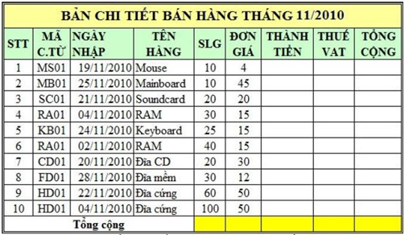

Bài tập Excel 2
Nhập và trình bày bảng tính như sau:

Yêu cầu:
Câu 1: Tính cột THÀNH TIỀN = SLF * ĐƠN GIÁ (định dạng đơn vị tiền tệ là
Câu 2: Tính THUẾ VAT = 10% * THÀNH TIỀN
Câu 3: Tính TỔNG TIỀN = THÀNH TIỀN + THUẾ VAT
Câu 4: Sắp xếp bảng tính theo MÃ C.TỪ (mã chứng từ) tăng dần, nếu trùng mã thì sắp xếp theo ngày nhập giảm dần.